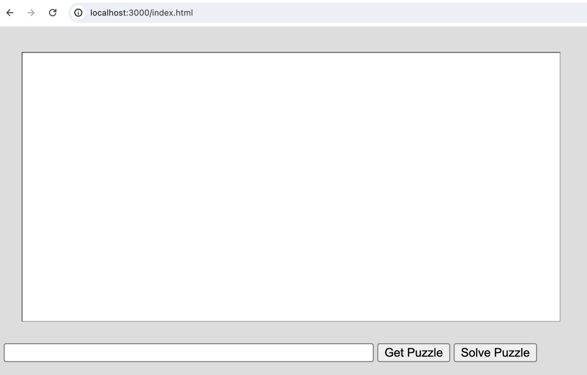
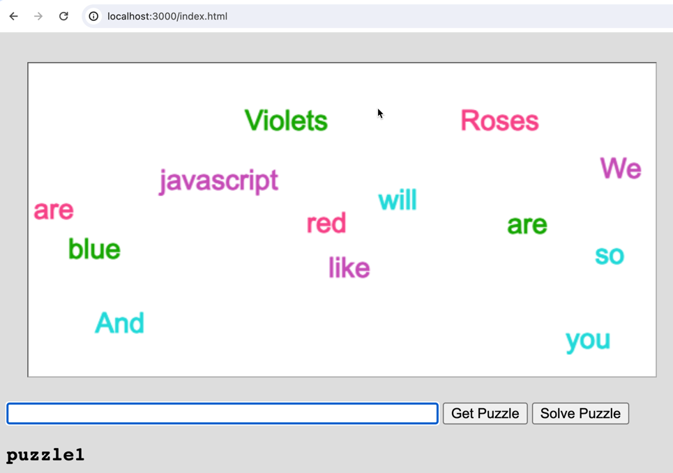
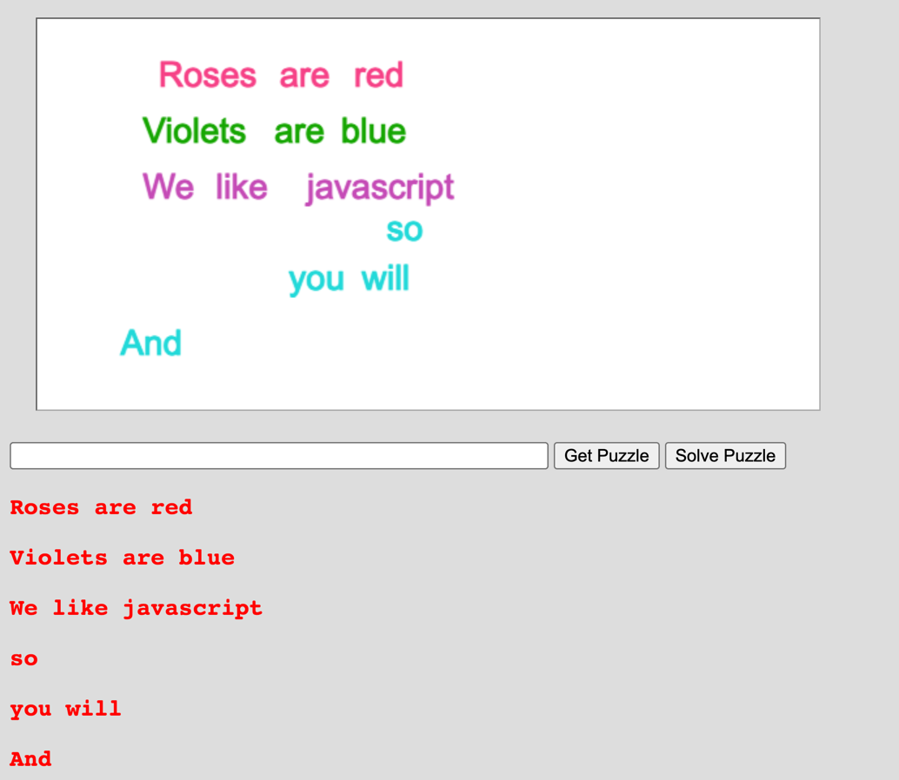

Revisions:
In this assignment you are going build a web app that incorporates not only html DOM elements but also objects rendered on a html <canvas> element. Specifically, you will build an app that allows a user to solve a puzzle by dragging words around on the canvas with their mouse. You will then need to reconstruct the text their dragged words represent and have the server determine if the puzzle was solved correctly.
Marking: This assignment is based on 23(green) design requirements numbered R1.1...R3.12 for a total of 46 marks.
Marks are awarded, or deducted, based on requirements as follows. Note: TAs will be running and evaluating your assignment code so we are not requesting a demonstration video for the four term assignments(only for the final project).
| Req Type | Assignment Grading |
|---|---|
| R0.x | Critical Submission and Intent Requirements. Assignment gets 0 if any critical submission requirement (shown in red) is not met. |
| R0.x | Good Practice Requirements. You lose 2 marks for each good practice requirement (shown in amber) not met. |
| Rx.x | Design Requirements. You earn 2 marks for each design requirement (green) satisfied and well implemented; 1 mark if it's partly met or met but not well implemented; and 0 if it's not met or attempted. |
The following requirements pertain to all your assignments regardless of what your application is supposed to do (i.e. regardless of the design requirements). These requirements are to ensure that your code is properly documented, readable, and maintainable.
R0.1 UNIQUENESS REQUIREMENT. The solution and code you submit must be unique. That is, it cannot be a copy of, or be too similar to, someone else's code, or other code found elsewhere. You are, however, free to use any code posted on our course website as part of your assignment solution. [Assignment mark is 0 if this requirement is not met.]
R0.2 README FILE: All of your submissions MUST include a README.txt. Your README.txt file is the first place the marking TA will look to evaluate your submission. If there is anything wrong with your README.txt file the marking stops and the grade is 0. Your README.txt MUST be complete and contain all of the following:
FILENAME and EXTENSION: The file name of your readme.txt file must start with the prefix "ReadMe" (not case sensitive) and the file must have an actual .txt extension. Other file extensions like .md, .html, .doc, etc. will not be accepted. The file contents must be plain text and not be in a markup language (e.g. html, or md, or xml etc.) or a programming or scripting language. [0 marks for the assignment if the filename, extension or format do not comply].
YOUR NAME, STUDENT NUMBER, and AFFIDAVIT: Your readme.txt file must contain the following affidavit statement signed using BOTH your name and student number. This is where you are identifying yourself and claiming to be the author of the work and the person who is to be credited for the work. [0 marks for assignment if any of the three items are missing, incorrect, or incomplete].
Affidavit:
"I attest to be begin the sole author of this summitted work and any code borrowed from other sources has been identified by comments placed in my submitted code.
YOUR_NAME, YOUR_STUDENT_NUMBER
"
INSTALL INSTRUCTIONS: Instructions on what actual commands to execute to install any external code modules needed to run your code. This will likely look like npm install or npm install module_name. It must be a legitimate command that the marking TA can copy-paste-and-execute. The marker will attempt to execute your commands from a command terminal open on the directory that contains your server file. [0 marks for the assignment if the install command is missing, incorrect, or incomplete.]
LAUNCH INSTRUCTIONS: Instructions on what command to execute to launch your app. e.g. node server.js. As the course progresses there will be more launch options so it's important to provide the actual command. This must be a legitimate command that the marking TA can copy-paste-and-execute. The marker will attempt to execute your commands from a command terminal open on the directory that contains your server file. [0 marks for assignment if the launch command is missing, incorrect, or incomplete.]
TESTING INSTRUCTIONS: Provide the acual URL you want the TA to visit with their Chrome browser to test your server. For example:http://localhost:3000/mytest.html?name=Louis
Pay attention to any specific URL's that must be supported by your app but you must supply an initial one in your README.txt file. If your app requires a userid/password to run then provide one here for the TA to use. You must supply an actual URL here and not just say something like "see output on server console". [0 marks for assignment if the URL is missing, incorrect, or incomplete.]
VIDEO DEMONSTRATION: Tutorials and the final term project assignment require that you post a YouTube video of you demonstrating that you have completed the required problems. In those cases you must provide the YouTube link in your ReadMe.txt file. You WILL NOT need a demonstration video for the 4 term assignments. The video link must be a valid YouTube link and viewable (i.e. not private) at the time of grading. Videos must be a proper screen capture video with sound narration. Filming your laptop screen with your phone will not be accepted. [0 marks for assignment if the YouTube video does not comply with these requirements.]
R0.3 CODE SUBMISSION, ORGANIZATION, AND COMPILATION: You must submit all the code files and data files necessary to compile and run your app. The code must at least compile without error and launch. The TA's will execute your app by following the instructions you provide in your README.txt file. You must submit a single.zip formatted file to brightspace. (not .rar or .tar or whatever; only .zip format is accepted). Though you can write code on Windows, Linux, or Mac OS the code must be generic enough to be OS agnostic. (See also the the requirement below about not submitting the node_modules directory). Your code must work with at least a current Chrome browser and version 18.x.x, or higher, of node.js [Assignment mark is 0 if this requirement is not met.]
R0.4 INTENT REQUIREMENT: The solution
and code you submit must comply with the intent of the assignment. For example if you are required to build a node.js/javascript server and you choose to build an apache/PHP server instead you will have violated the intent of the assignment even though the user input-output experience might be the same. As another example, if you are asked to build a "thick client" solution where the server just supplies data and the browser renders it but you build a "thin client" solution where the server renders all the HTML pages you will have violated the intent even though the user's experience would look the same.
[Assignment mark is 0 if this requirement is not met.]
R0.5 VARIABLE AND FUNCTION NAMES: All of your variables and functions should have meaningful names that reflect their purpose. Don't do what they do in math courses where they say things like: "let x be the number of customers and let y be the number of products...". Instead call your variables numberOfCustomers or numberOfProducts. Your program should not have any variables called "x" unless there is a good reason for them to be called "x". (One exception: it's OK to call simple for-loop counters i,j and k etc. when the context is clear and VERY localized.) Remember, javascript variables don't have types that can help clarify their meaning so choosing good names is even more important. Many functions in javascript are annonymous (have no name) and so the names of variables that refer to them should be well chosen.
Remember: any fool can write code that a computer will understand; the goal is to write code that we can understand. [Minus 2 marks from assignment if this requirement is not met.]
R0.6 JAVASCRIPT IN STATIC HTML: Your static html pages should NOT make direct reference to javascript functions. Don't do something like the following:
<button type="button" onclick="myFunction()">Try it</button>
Instead do something like this:
<button type="button" id="submit_button">Try it</button>
and elsewhere in your .js javascript file say:
document.getElementById('submit_button').addEventListener('click', myFunction)
[Minus 2 marks from assignment if this requirement is not met.]
R0.7 COMMENTS: Comments in your code must coincide with what the code actually does. It is a common bug to modify or cut-and-paste code and forget to modify the comments and so you end up with comments that say one thing and code that actually does another. Don't over-comment your code - instead choose good variable names and function names that make the code "self commenting". Don't be reluctant to create local variables so that the name of the variable helps to provide clarity -there is no prize for having the fewest lines of code. [Minus 2 marks from assignment if this requirement is not met.]
R0.8 MODULARIZATION: Your client-side and server-side javascript should not be in two giant files. Break you client-side javascript into smaller manageable and readable files and include them individually with <script> tags in your html document. On the server-side use requires or imports appropriately to organize your code into managable size files. [Minus 2 marks from assignment if this requirement is not met.]
R0.9 BLOATED CODE: If your assigment uses external modules installed with npm, DON'T submit the node_modules directory with your code (it's potentially huge). Remove that directory and only submit the package.json and package-lock.json files. The TAs will use these files to install the required modules using the instructions in your readme.txt file. NPM modules are platform specific and must be reinstalled on the marker's platform. [Minus 2 marks from assignment if this requirement is not met.]
R0.10 CITATION REQUIREMENT: If you use code from other sources you must cite the source in comments that appear in your code. If the source is an online website then put the URL in the comments. You may use bits of code from outside sources but this may not form the complete solution you are handing in. You DON'T have to cite demo code we provide on the course web site or with tutorials and assignments, however that code should not be used for things you post publicly (like on GitHub). [Minus 2 marks from assignment if this requirement is not met.]
VERY IMPORTANT: Any sample code provided may have bugs although none have been put there intentionally. You must be prepared to find errors in both the requirements and sample code. Please report errors so they can be fixed and an assignment revision posted.
This is a continuation of work started in Tutorial 3. It is intended that you use your answer code, or our answer code, for Tutorial 3 as a starting point. In that tutorial you had text files of song lyrics served to a user as randomly scrambled words on a canvas which they could drag around with their mouse. Here we want you to serve the client scrambled words that represent a poem, or phrase, or puzzle and expect the user to drag the words into the correct phrase order.
Note the server for this assignment can be based on the server code from Tutorial 03 and should only need minor modification.
R0.3 The server for this assignment must use only the built in capabilites of node.js and NOT use any external npm modules yet.
R1.1 The server should be hosted on port 3000 and be reachable from a browser on the same machine by visiting http://localhost:3000/index.html (Your ReadMe.txt file should still tell the TA what specific URL to use to test your application.) When the application loads there should be a blank canvas area, a textfield in which to type puzzle names and a "Get Puzzle" and a "Solve Puzzle" button:

R1.2 The server should have a puzzles directory of .txt files. The puzzles directory should contain at least the following files: puzzle1.txt, puzzle2.txt, and puzzle3.txt. Each file should contain the text of a puzzle phrase or poem that the user is meant to reconstruct. The puzzle files should just be the lines of text that form the intended phrase and should not contain other properties like intended colour or location of words.
R1.3 puzzle1.txt should be a text file with the following four lines of text. (That way the TAs will have an obvious known puzzle to try and solve with your app.) The others can be more interesting.
Roses are red Violets are blue We like javascript And so will you
R1.4 puzzle2.txt should be a text file containing a limerick.
R1.5 puzzle3.txt should contain single letters in which the user is meant to reconstruct individual words. Note the letters can be implemented as single character words or strings (as opposed to actual characters).
You may add additional puzzle files of your own if you want.
R1.6 Your puzzles should be suitable for children and not contain vulgar or inappropriate phrases.
R1.7 You should be able to add new puzzles by simply adding files to the puzzles directory. There should be no modification of the server code required to do this and you should be able to do this while the server is running. [The TAs will be dragging their own puzzle file into your puzzles folder while your server is running.]
R1.8 The server should not send the puzzle words to the client in the correct order. That is, if the client code was to print the words from the server on its console the words should not be in the intended order. Similarly, if the TA were to inspect your running code using the Chrome developer tools they should not be able to come across anything that would give away the intended word order of the puzzle. Also, the client should NOT be able to see the puzzle text using a URL like http://localhost:3000/puzzles/puzzle1.txt. That is, puzzles should NOT be accessible to the client as static file requests. This suggests that the puzzles folder on the server should NOT be in the folder used to serve static files to the client.
R1.9 Your client or server code should not have any references to songs in its code. That is, if you base your code on the tutorial 3 server you must rename all code items that might pertain to songs to pertain to puzzles instead. Variable and function names must reflect what this code is actually about. Also, you should not just comment out old, unused, code but instead get rid of it.
R2.1 The server should send the html and other files representing the app when the user visits http://localhost:3000/index.html
R2.2 The exchange of puzzle data between client and server should be in the form http POST messages and data should be exchanged as JSON object strings.
R3.1 The client webpage should have an HTML5 canvas area, a text input, and the following buttons: "Get Puzzle", "Solve Puzzle".
R3.2 The client should be able to request a puzzle from the server by typing the "puzzle1", "puzzle2", or "puzzle3" in the text field and clicking the "Get Puzzle" button.The client should then display the words from the corresponding text file stored on the server. The words from the file should appear on the client's canvas. When a puzzle is loaded the text field should be cleared but the name of the puzzle should appear as html text at the bottom of the interface. See image below.

R3.3 When a puzzle is loaded the words shown on the canvas should be randomly located on the canvas. All the words on the canvas must be completely, or mostly, within the canvas boundary. Words should not be outside, or mostly outside, the canvas boundary.
R3.4 When a puzzle is loaded the words shown on the canvas should be randomly coloured with all words intended to be on the same line having the same colour. This way you are providing a hint for the user - that words with the same colour belong on the same line.
R3.5 The colouring of words should NOT reveal what line the words should appear on. For example, purple should not always mean the second line. So even though the colours let you know which words belong on the same line you should not be able to deduce from the colour whether it is the first line, second line, etc.
R3.6 For puzzles like puzzle3 where the user is meant to arrange letters to form individual words the letters belonging to the same word should all be the same colour and different form the colour of other words.
R3.7 The user should be able to drag the words around with a their mouse. Moreover, the user should be able to drag from anywhere within the word and not just at the begining of the word.
R3.8 When the user presses the Solve Puzzle button the current organization of the words should be shown as lines of HTML text. That is, should reflect how the user dragged the words to form lines of text. (This will be the fun part -trying to figure out from the position of words which ones belong to the same line of text and their order in the line.) You need to preserve the apparent lines of text the user has created and not just the order of all the words. Also the words on the canvas that are considered to form a line should get vertically aligned - that way you can use the solve puzzle button the "clean up the canvas". You can see that behaviour in the demonstration video provided with the assignment.

R3.9 The colouring of the html text of the client solutions should indicate whether their current solution is correct or not. The text should be red if the puzzle solution is still incorrect and should be green if the puzzle has been correctly solved. The colouring of the text must be based on CSS styling.
R3.10 When dragging words to form lines to text the alignment should not have to be too exact. That is, it is unrealistic to expect users to get words exactly in a line. There must be an appropriate slack in what you accept as a valid line of text.
R3.11 Determining whether a puzzle has been solved correctly must be done by the server based on the clients words being sent to it. The server would then respond with an indicator of whether the words were in the correct order or not. Note to be correct only the words need to be in a correct order. The client does not have to preserve the lines. For example both of the following would be considered a correct solution to puzzle1:
Rose are red Violets are blue We like javascript And so will you
Rose are red Violets are blue We like javascript And so will you
R3.12 The user should be able to request and load a new puzzle at any time by typing puzzle1, puzzle2, etc. in the textfield and pressing the Get Puzzle button or hitting the enter key. That is, the client should not have to first solve a puzzle before loading a new one.
Here is a YouTube demonstration video showing the intended behaviour and discussing the assignment requirements.